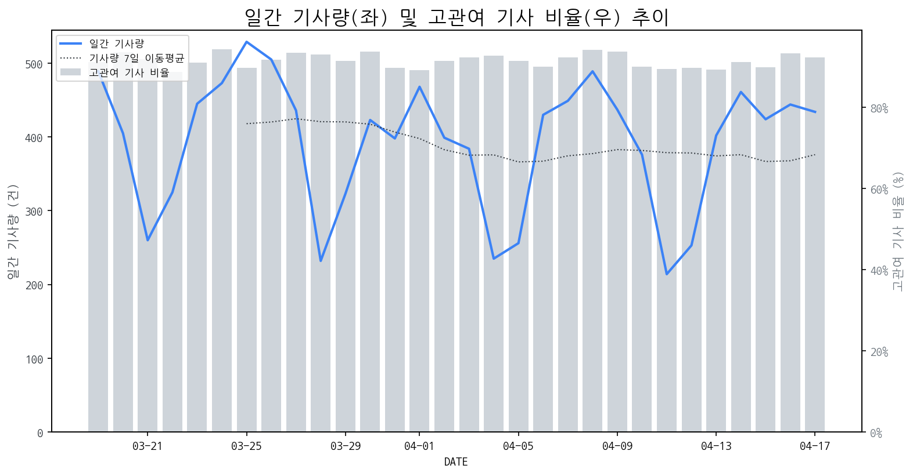

1
시장 활동 지표
기사량 추세 & 이상 징후 탐지
시장의 '전체 기사량'이 평소보다 비정상적으로 급증했는지(Spike)를 차트로 확인하고, LLM이 분석한 급등의 핵심 원인을 파악할 수 있음

고관여 기사란? 산업 연관 키워드로 수집된 기사들 중 디스플레이 키워드에 가중치를 반영하여 도출된 관련성 높은 기사
수집된 기사 수 (2026-04-17)
434
+15% WoW
기사량 변동 수준 (7일 이동평균 대비)
±6.7% 이하
2
오늘의 키워드
급격한 관심 ↑, 주목해야 할 키워드
1
디스플레이
+2.4σ
삼성디스플레이의 IT OLED 투자 및 기술력 강조, 협력사 상생 활동 등이 디스플레이 산업 전반에 대한 관심을 증폭시켰습니다.
Related Metrics
금일 언급량: 14, 전일 대비: +10
Interpretation
IT OLED 시장 주도권 강화 기대
Next Step
'디스플레이' 관련 상세 기사 및 경쟁사 반응 모니터링
2
구글
+2.1σ
구글의 게임, 스마트 글래스 신제품 출시 및 명품 협업 소식이 투자자들의 주목을 끌었습니다.
Related Metrics
금일 언급량: 8, 전일 대비: +3
Interpretation
스마트 글래스 디스플레이 수요 증대
Next Step
핵심 토픽 'Set_Manufacturer' 관련 신호입니다. 3번 섹션(키워드 감성분석)에서 해당 토픽의 감성 변동을 교차 확인하세요.
3
xr
+2.1σ
건양대학교 국방 XR 학부 관련 뉴스가 XR 키워드 급증을 견인했습니다.
Related Metrics
금일 언급량: 10, 전일 대비: +7
Interpretation
XR 교육 확대로 신규 수요 기대
Next Step
'xr' 관련 상세 기사 및 경쟁사 반응 모니터링
4
인텔
+1.8σ
인텔, 신규 CPU 출시 및 MS 서피스 신제품 OLED 적용으로 디스플레이 시장 주목
Related Metrics
금일 언급량: 4, 전일 대비: +4
Interpretation
OLED 수요 증가 기대
Next Step
'인텔' 관련 상세 기사 및 경쟁사 반응 모니터링
3
실시간 Risk 키워드
경계해야 할 시그널 탐지
특정 토픽의 부정 감성 점수가 급등할 때 이를 즉시 탐지하고, "근거 기사" 링크를 통해 리스크의 실체를 빠르게 파악할 수 있음
키워드 분석 결과, 오늘은 걱정할 만한 하락 신호가 없습니다. (부정 언급량 변화: +1.5σ 이내)
4
주요 이벤트 모니터링
실시간 산업 동향 파악을 위한 주요 활동
최근 발생한 주요 기업들의 신제품 출시, 투자 등 주요 이벤트를 제공하여 매일 경쟁사 동향을 확인할 수 있음
디스플레이 제조 장비, 특히 세정 및 공정 장비 분야의 신규 수주가 잇따르면서 관련 기업들의 주가가 상승하는 모멘텀이 부각되었습니다. 이는 해당 분야의 사업 성장에 대한 시장의 긍정적인 전망을 반영합니다.
Impact
이번 수주 모멘텀은 디스플레이 제조 장비 시장의 경쟁 심화와 함께, 핵심 공정 기술력을 갖춘 소수 기업에 대한 투자 집중 현상을 심화시킬 수 있습니다.
Next Step
디스플레이 제조 기업은 안정적인 장비 공급망 확보와 함께, 자체적인 공정 기술 고도화를 통해 장비 수주 경쟁력을 강화해야 합니다.
중국이 AR 안경 시장 성장을 주도하며 80%에 달하는 높은 성장률을 기록하고 있습니다. 이는 AR 기술의 대중화와 관련 디스플레이 수요 증가를 시사합니다.
Impact
AR 안경 시장의 폭발적인 성장은 마이크로디스플레이, 홀로그래픽 디스플레이 등 관련 디스플레이 기술 및 부품 시장에 상당한 투자와 혁신을 촉발할 것으로 예상됩니다.
Next Step
디스플레이 제조 기업은 AR 안경에 최적화된 고해상도, 저전력, 소형화 디스플레이 기술 개발 및 생산 능력 확보에 집중하여 시장 선점에 나서야 합니다.
에이수스(ASUS)가 PC 및 게임 분야 전문가와 협력하여 특별 한정판 게임용 디스플레이 'ROG 플로(Flow)'를 출시했습니다. 이는 고성능 게이밍 경험을 강화하는 제품입니다.
Impact
이번 ROG 플로 출시로 고성능 게이밍 디스플레이 시장의 경쟁이 심화되고, 소비자들은 더욱 특화된 게임 경험을 제공하는 제품에 대한 수요를 높일 것으로 예상됩니다.
Next Step
프리미엄 게이밍 디스플레이 시장에서의 경쟁 우위를 확보하기 위해 차별화된 기술력과 디자인을 갖춘 신제품 개발 및 마케팅 전략 수립을 검토해야 합니다.
인텔이 플래그십 CPU 시장 경쟁에 참여하며 하이엔드 CPU '코어 울트라 7 270K'를 출시했습니다. 이 CPU는 기존 하이엔드 제품들과 경쟁할 성능을 갖춘 것으로 평가받고 있습니다.
Impact
향상된 CPU 성능은 더 높은 해상도, 높은 주사율, 그리고 HDR 지원 등 더욱 발전된 디스플레이 기술에 대한 수요를 견인할 수 있습니다.
Next Step
고성능 CPU 시장의 성장에 맞춰, 디스플레이 제조 기업은 최신 CPU의 성능을 최대한 활용할 수 있는 고주사율, 고해상도, 넓은 색 영역을 지원하는 디스플레이 개발에 집중해야 합니다.
삼성은 AI 기술을 활용한 TV 경험 강화에, LG는 최고 수준의 화질 경쟁력으로 시장 반격을 예고했습니다. 이는 양사 간의 차별화된 전략을 통해 국내 TV 시장의 경쟁 구도에 변화를 가져올 것으로 예상됩니다.
Impact
AI 기능 강화 및 초고화질 기술 경쟁 심화로 인해 소비자들의 TV 구매 결정에 있어 혁신적인 기능과 시각적 경험이 더욱 중요한 요소로 작용할 것입니다.
Next Step
디스플레이 제조 기업은 AI 기반 기능 구현을 위한 기술 개발 및 차세대 화질 기술 혁신을 가속화하고, 이를 효과적으로 소비자에게 전달할 마케팅 전략을 수립해야 합니다.